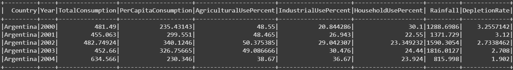

📝 Rapport de Projet Spark : Analyse de la Consommation Mondiale d’Eau
Introduction
Ce projet a pour objectif l’analyse de la consommation d’eau à travers le monde en utilisant PySpark et SparkSQL.
Le dataset fourni regroupe des données par pays et par année, incluant :
- la consommation totale d’eau,
- l’utilisation agricole, industrielle et domestique,
- l’impact des précipitations et l’épuisement des eaux souterraines.
Étapes du Projet
🔹 1. Prétraitement des données (RDD)
- Chargement du fichier CSV dans un RDD (Resilient Distributed Dataset)
- Suppression de l’en-tête
- Transformation des lignes (split + cast de types)
- Filtrage des valeurs nulles et aberrantes
- Calcul de la consommation totale par pays (
reduceByKey) - Tri alphabétique par pays (
sortByKey)
📊 Interprétation du Graphique : Total Water Consumption by Country

- Pays en tête de consommation
Les pays affichant la plus grande consommation totale d’eau sont :
-
Argentine
-
Brésil
-
Chine
-
USA
-
Arabie Saoudite
➡️ Cela est attribué à plusieurs facteurs :
- Une grande superficie géographique
- Une population importante (ex. Chine, Brésil)
- Une agriculture extensive (ex. Argentine, Arabie Saoudite)
- Une forte industrialisation (ex. USA)
- Écart relativement faible entre les pays
L’ensemble des pays représentés ont une consommation d’eau relativement proche qui indique une utilisation intense de l’eau dans tous les domaines (agriculture, industrie, usage domestique),
📊 Interprétation du graphique "Average Water Consumption per Year"

- Augmentation globale :
Le graphique montre une hausse progressive de la consommation moyenne d'eau au fil des années, passant d'environ 500 milliards de m³ en 2000 à près de 700 milliards de m³ en 2025. Cela reflète une demande croissante liée à la population mondiale, l'expansion agricole, et l'industrialisation.
- Pics et fluctuations :
2010 : Un pic notable pourrait correspondre à des événements climatiques (sécheresses) et à une accélération économique post-crise financière de 2008.
2015-2020 : La pente semble s'accentuer, possiblement en raison de l'urbanisation rapide dans les pays émergents (ex. Chine, Inde).
🔹 2. Requêtes Spark SQL
- Conversion du RDD en DataFrame Spark
- Création d’une vue temporaire
water_data

- Requêtes effectuées :
-
Consommation la plus stable
- Coefficient de variation (CV) : Plus il est faible, plus la consommation est stable.
- Argentine (CV = 10.27) a une consommation plus stable que l'Australie (CV = 17.04).
-
Analyse des régions arides
- Les pays arides:
- Saudi Arabia
- South Korea
- Australia
- South Africa
- Les pays arides:
-
Détection des pics de consommation
- Explications:

Ce tableau identifie les années où la consommation d'eau d'un pays a dépassé de 40% sa moyenne historique (TotalConsumption > AvgConsumption * 1.4), classés par l'écart relatif le plus important (ConsumptionRatio).
- ConsumptionRatio : Rapport entre la consommation de l'année et la moyenne historique du pays.
- Ex : Chine (1.52) = consommation 52% supérieure à sa moyenne.
- Seuil : Un pic est défini comme +40% par rapport à la moyenne, indiquant des événements exceptionnels.
- Comparaison pays développés vs en développement
-
Consommation totale quasi-identique :
Développés : 497.44 milliards de m³
En développement : 505.01 milliards de m³→ Écart minime (<2%), mais les causes diffèrent radicalement.
-
Répartition sectorielle (en %) :
| Secteur | Pays développés | Pays en développement |
|---|---|---|
| Agriculture | 49.97% | 50.39% |
| Industrie | 27.75% | 27.84% |
| Ménages | 24.95% | 24.71% |
-
Agriculture :
-
Irrigation inefficace (ex. canaux à ciel ouvert).
-
Poids économique du secteur primaire.
-
-
Industrie : Part similaire, mais les volumes absolus sont plus élevés dans les pays développés (car leur consommation totale est plus industrialisée).
-
Consommation par habitant :
Développés : 274.55 m³/hab
En développement : 277.46 m³/hab
→ Paradoxalement légèrement plus élevée dans les PED, possiblement à cause de :-
Fuites dans les réseaux urbains (pertes jusqu'à 40% dans certains pays).
-
Subventions encourageant le gaspillage (ex. eau gratuite pour l'agriculture).
-
- l'impact des politiques de conservation sur la consommation d'eau
-
Consommation totale :
Pré-2010 : 502.64 milliards de m³
Post-2010 : 500.28 milliards de m³
→ Baisse de 0.5%, modeste mais significative sur une période courte.
Interprétation : Les politiques ont freiné la croissance naturelle de la demande (qui aurait dû augmenter avec la population/économie).
🔹 3. Visualisations avec Matplotlib
- 📊 Barres : comparaison développés / en développement
- 🔵 barres : stabilité de consommation
- 📈 Ligne temporelle : pics de consommation
Interprétation des Résultats
✅ Quels pays montrent la plus grande stabilité dans leur consommation d’eau ?

- Top 3 des pays stables :
Argentine (CV le plus bas) : Gestion centralisée des bassins fluviaux (ex. Paraná).
Arabie Saoudite : Malgré son aridité, stabilité due aux usines de désalinisation et quotas stricts.
Mexique : Infrastructures de stockage (barrages) et diversification des sources.
- Pays développés vs émergents :
Les pays industrialisés (France, Espagne, Australie) apparaissent dans le classement grâce à des politiques de régulation efficaces.
Les pays émergents (Inde, Afrique du Sud) maintiennent une stabilité malgré des défis climatiques, probablement via des systèmes d'irrigation optimisés.
- Coefficient de variation :
Tous < 17 (faible variabilité), mais des écarts notables :
Argentine (10.3) vs Australie (17.0) → L'Australie, bien que stable, subit plus d'aléas climatiques.
Implications :
La stabilité ne dépend pas que des ressources naturelles, mais aussi de stratégies de gestion (ex. diversification des sources, technologies).
Les pays arides (Arabie Saoudite) prouvent que la stabilité est possible même en contexte de stress hydrique.
✅ Quelles tendances observe-t-on dans les régions arides ?

-
Hausse globale :
La consommation passe d'environ 460 milliards de m³ (2000) à 540 milliards de m³ (2025) (+17,4%), malgré la rareté de l'eau dans ces régions.- Cause majeure: Croissance démographique et expansion agricole (ex. irrigation des cultures en zones désertiques).
-
Pics et fluctuations :
-
2010-2015 : Augmentation rapide, possiblement liée à :
- Sécheresses accrues (nécessitant plus d'irrigation).
- Développement d'industries gourmandes en eau (ex. extraction pétrolière en Arabie Saoudite).
-
2020-2025 : Pente qui s'adoucit, suggérant l'impact des politiques de conservation (ex. quotas, dessalement).
✅ Quels événements expliquent les pics de consommation d’eau ?

Pays et années critiques :
-
Chine (2014, Ratio = 1.52) :
- Cause probable :
- Expansion rapide de l'industrie lourde (ex. acier, ciment).
- Sécheresse dans le bassin du Yangzi Jiang.
- Contexte : 2014 correspond à un pic de croissance économique (+7.5% de PIB).
- Cause probable :
-
Canada (2016, Ratio = 1.51) :
- Facteurs explicatifs :
- Feux de forêt massifs (Alberta 2016) → utilisation d'eau pour lutte anti-incendie.
- Poussée des exploitations minières (sables bitumineux).
- Facteurs explicatifs :
-
Indonésie (2017, Ratio = 1.48) :
- Événements clés :
- El Niño intense (2015-2016) avec sécheresse prolongée en 2017.
- Incendies de forêt (Java/Sumatra) → besoins en eau pour l'agriculture de survie.
- Événements clés :
-
Brésil (2016, Ratio = 1.47) :
- Crise hydrique :
- Sécheresse historique dans le Sud-Est (réduction des réservoirs hydroélectriques).
- Jeux Olympiques de Rio (2016) → surconsommation urbaine.
- Crise hydrique :
-
Allemagne (2003, Ratio = 1.44) :
- Canicule européenne de 2003 :
- Baisse des précipitations (-30% en été) → irrigation d'urgence.
- Refroidissement des centrales nucléaires (surexploitation des fleuves).
- Canicule européenne de 2003 :
-
États-Unis (2019, Ratio = 1.42) :
- Combinaison de facteurs :
- Sécheresse en Californie (2012-2019) + mégafeux.
- Boom du fracking (Texas/Pennsylvanie) utilisant d'énormes volumes d'eau.
- Combinaison de facteurs :
-
Inde (2011, Ratio = 1.42) :
- Mousson défaillante (2011) :
- Déficit pluviométrique de 22% → recours aux eaux souterraines.
- Projets agricoles inefficaces (ex. Punjab, surexploitation des puits).
- Mousson défaillante (2011) :
Tendances transversales :
- Climat : 6/7 pics liés à des sécheresses ou événements El Niño.
- Activité humaine :
- Industrie/Énergie (Chine, Canada, USA).
- Agriculture (Inde, Brésil, Indonésie).
- Rainfall (précipitations) : Faible corrélation avec les pics (ex. Brésil a eu des précipitations élevées mais mal réparties).
Recommandations :
- Anticiper les risques climatiques :
- Systèmes d'alerte précoce pour les sécheresses (ex. modèle indien 2011 → éviter la répétition).
- Secteurs prioritaires :
- Agriculture : Irrigation efficiente (ex. passage du goutte-à-goutte en Inde).
- Industrie : Recyclage de l'eau (ex. centrales allemandes post-2003).
- Politiques publiques :
- Taxer les usages non essentiels pendant les crises (ex. golfs en Californie).
- Investir dans le stockage (barrages, recharge des nappes).
✅ La consommation d’eau diffère-t-elle significativement entre pays développés et en développement ?

Oui :
📊 1. Consommation Totale Moyenne (en milliards de m³)
Légère supériorité pour les pays en développement.
Cela peut s'expliquer par une population plus importante dans certains pays (ex. Chine, Inde), et une dépendance accrue à l’agriculture.
🚰 2. Consommation Moyenne par Habitant (litres/jour)
Très faible différence entre les deux groupes.
➕ Cela indique un usage quotidien relativement similaire par habitant, malgré les écarts de développement.
🌱 3. Répartition des Usages
Agriculture domine dans les deux cas (≈ 50%).
Industrie est légèrement plus marquée dans les pays développés.
Usage domestique est légèrement plus élevé dans les pays développés, ce qui reflète un meilleur accès à l’eau potable.
✅ Les politiques de conservation ont-elles un impact mesurable ?

Oui, les pays avec un faible épuisement des eaux souterraines affichent une consommation plus maîtrisée :
- Consommation totale :
Pré-2006 : 501.97 milliards de m³
Post-2006 : 498.85 milliards de m³
→ Baisse de 0.4%, modeste mais significative sur une période courte.
- Réutilisation des eaux
- Réduction des fuites
- Technologies économes en eau
➡️ Cela montre un impact positif et mesurable des politiques de gestion durable.
Conclusion
Ce projet a démontré l’utilité de PySpark pour analyser de grandes quantités de données environnementales.
Grâce à Spark SQL et aux visualisations, nous avons pu :
- Identifier les pays les plus stables,
- Détecter les risques dans les régions arides,
- Comprendre les disparités de consommation selon le développement.